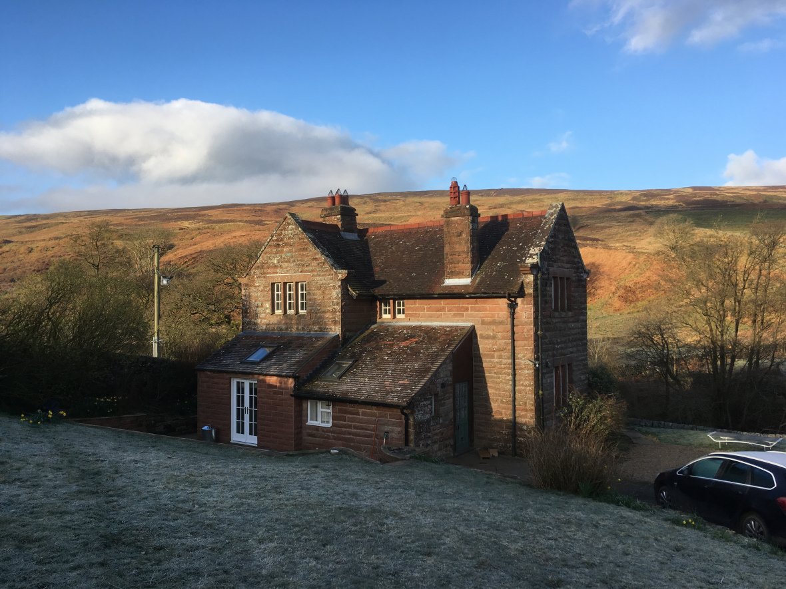

Pump House Cottage
Pump House CottageCastle Carrock
Brampton
Cumbria
CA8 9NG
Pump House Cottage is in Geltsdale, just 3 miles from the nearest village of Castle Carrock.
Directions to Pump House Cottage
From the pub in Castle Carrock, follow the sign to Geltsdale.
Keep going along the single lane road which after 1.1 miles takes an almost 90 degree turn to the right.
After another 0.8 miles, continue on over the cattle grid where the sign says “PRIVATE ROAD”.
Take the first turn on the left (usually marked by a large blue bin).
Keep going on the gravel track down the hill and cross a little bridge.
Keep going through the gate at the bottom that has a sign about cows.
Drive slowly through the cows – they’ll move out of the way.
You’ll see buildings pretty soon at the end of the track – use the narrow bridge or the ford to get to the house.
Notes
Mobile phone signal strength is poor in Castle Carrock and Geltsdale. Check the directions before you head out.
Pump House Cottage is 7 miles from Brampton, Cumbria.
Pump House Cottage is 3 miles from Castle Carrock.
Castle Carrock is the closest town or village to Pump House Cottage.
Pump House Cottage is in the North Pennines AONB.
Pump House Cottage is near Binney Bank.
Pump House Cottage is in Cumbria, the third largest county in England.
Officially, it’s “Pump House Cottage” with a space between “Pump” and “House”, but some might search for “Pumphouse Cottage”. If you’re looking for “Pumphouse Cottage, Brampton”, hopefully you’ll still find us.

Location: 54°52’33.4″N 2°39’50.7″W